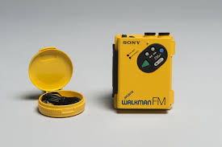

Walkman Professional WM-D6C
The Sony Walkman Professional WM-D6C offered studio-quality sound in a portable format. It was widely used by journalists and audiophiles alike.
- Release Year: 1984
- Features: Studio-quality sound, durable design, professional-grade recording.
- Price: $400 (at release)